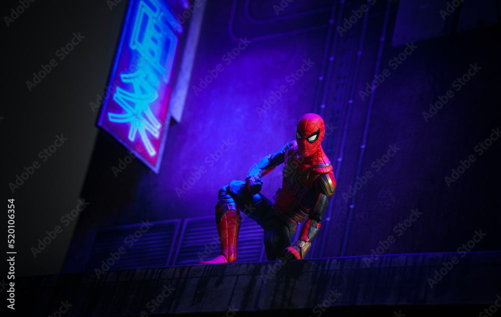
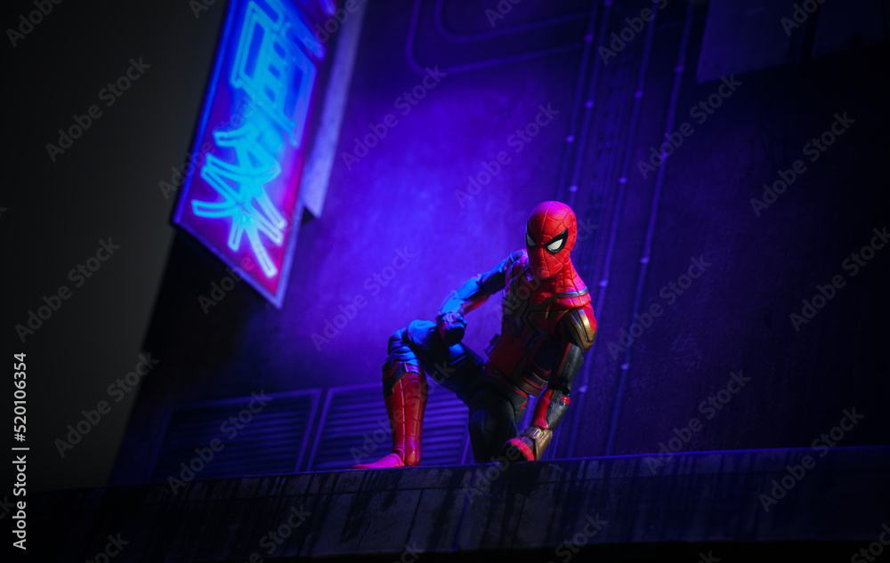

A cartoon is a type of visual art that is typically drawn,
frequently animated, in an unrealistic or semi-realistic style.
The specific meaning has evolved, but the modern usage usually refers to either:
an image or series of images intended for satire, caricature, or humor;
or a motion picture that relies on a sequence of illustrations for its animation.
Someone who creates cartoons in the first sense is called a cartoonist,[1]
and in the second sense they are usually called an animator.
Rossetti, William Michael; Spielmann,
Marion Harry Alexander (1911). "Cartoon".
Encyclopædia Britannica. Vol. 5 (11th ed.). pp. 434–435. 
